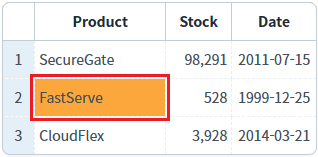
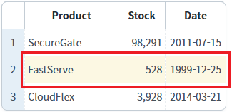
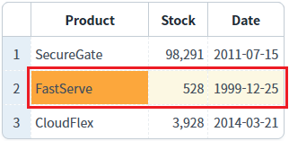
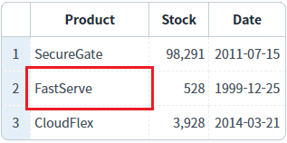
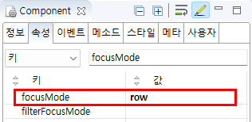

GridView의 'focusMode' 속성을 사용하여, 셀(Cell)의 선택 범위를 비교한 예제입니다. 기본 설정은 셀(Cell) 단위이며, 설정을 통해 행(Row)단위, 셀(Cell)+행(Row) 단위, 아무 동작 안함으로 변경할 수 있습니다.
(기본 설정) focusMode : cell
focusMode : row
focusMode : both
focusMode : none
각 GridView의 셀을 선택(클릭)하고 선택된 범위를 비교합니다.
예제 영역 '(기본설정) focusMode : cell'에 구성된 GridView의 'Product' 컬럼의 두 번째 로우를 클릭합니다.
클릭한 셀의 배경색이 변경됩니다.Image 1.브라우저(Chrome) 실행 예시 - focusMode : cell

예제 영역 'focusMode : row'에 구성된 GridView의 'Product' 컬럼의 두 번째 로우를 클릭합니다.
클릭한 셀이 속한 로우의 배경색이 변경됩니다.Image 2.브라우저(Chrome) 실행 예시 - focusMode : row

예제 영역 'focusMode : both'에 구성된 GridView의 'Product' 컬럼의 두 번째 로우를 클릭합니다.
클릭한 셀의 배경색과, 셀이 속한 로우의 배경색이 변경됩니다.Image 3.브라우저(Chrome) 실행 예시 - focusMode : both

예제 영역 'focusMode : none'에 구성된 GridView의 'Product' 컬럼의 두 번째 로우를 클릭합니다.
셀의 선택되지 않으며, 배경색이 변경되지 않습니다.Image 4.브라우저(Chrome) 실행 예시 - focusMode : none

GridView와 연결된 DataList 생성 및 연결 방법은 생략되었습니다.
1
GridView의 속성을 정의합니다.
[필수] focusMode="옵션 값"
(옵션 설명)
cell : (기본 값) 셀을 선택.
row : 행을 선택.
both : 셀과 행을 모두 선택.
none : 아무것도 선택하지 않음.
Image 5.웹스퀘어 스튜디오의 Component View - 속성 설정 예시

Example 1.Source
<!-- gridView 의 소스 본문 예시 --> <w2:gridView focusMode="both"> <!-- 중략 --> </w2:gridView>
focusMode